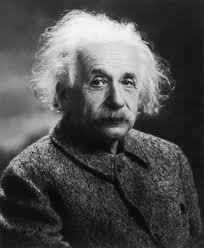

Albert Einstein (/ˈaɪnstaɪn/ EYEN-styne;[4] German: [ˈalbɛʁt ˈʔaɪnʃtaɪn] (About this soundlisten); 14 March 1879 – 18 April 1955) was a German-born theoretical physicist[5] who developed the theory of relativity, one of the two pillars of modern physics (alongside quantum mechanics).[3][6]:274 His work is also known for its influence on the philosophy of science.[7][8] He is best known to the general public for his mass–energy equivalence formula {\displaystyle E=mc^{2}}E = mc^2, which has been dubbed "the world's most famous equation".[9] He received the 1921 Nobel Prize in Physics "for his services to theoretical physics, and especially for his discovery of the law of the photoelectric effect",[10] a pivotal step in the development of quantum theory.
The son of a salesman who later operated an electrochemical factory, Einstein was born in the German Empire but moved to Switzerland in 1895 and renounced his German citizenship in 1896.[5] Specializing in physics and mathematics, he received his academic teaching diploma from the Swiss Federal Polytechnic School (German: eidgenössische polytechnische Schule, later ETH) in Zürich in 1900. The following year, he acquired Swiss citizenship, which he kept for his entire life. After initially struggling to find work, from 1902 to 1909 he was employed as a patent examiner at the Swiss Patent Office in Bern.
In 1933, while Einstein was visiting the United States, Adolf Hitler came to power. Because of his Jewish background, Einstein did not return to Germany.[13] He settled in the United States and became an American citizen in 1940.[14] On the eve of World War II, he endorsed a letter to President Franklin D. Roosevelt alerting FDR to the potential development of "extremely powerful bombs of a new type" and recommending that the US begin similar research. This eventually led to the Manhattan Project. Einstein supported the Allies, but he generally denounced the idea of using nuclear fission as a weapon. He signed the Russell–Einstein Manifesto with British philosopher Bertrand Russell, which highlighted the danger of nuclear weapons. He was affiliated with the Institute for Advanced Study in Princeton, New Jersey, until his death in 1955. He published more than 300 scientific papers and more than 150 non-scientific works.[11][15] His intellectual achievements and originality have made the word "Einstein" synonymous with "genius".[16] Eugene Wigner compared him to his contemporaries, writing that "Einstein's understanding was deeper even than Jancsi von Neumann's.
He published more than 300 scientific papers and more than 150 non-scientific works.[11][15] His intellectual achievements and originality have made the word "Einstein" synonymous with "genius".[16] Eugene Wigner compared him to his contemporaries, writing that "Einstein's understanding was deeper even than Jancsi von Neumann's. His mind was both more penetrating and more original".[17] n 1933, while Einstein was visiting the United States, Adolf Hitler came to power. Because of his Jewish background, Einstein did not return to Germany.[13] He settled in the United States and became an American citizen in 1940.[14] On the eve of World War II, he endorsed a letter to President Franklin D. Roosevelt alerting FDR to the potential development of "extremely powerful bombs of a new type" and recommending that the US begin similar research. This eventually led to the Manhattan Project. Einstein supported the Allies, but he generally denounced the idea of using nuclear fission as a weapon. He signed the Russell–Einstein Manifesto with British philosopher Bertrand Russell, which highlighted the danger of nuclear weapons. He was affiliated with the Institute for Advanced Study in Princeton, New Jersey, until his death in 1955.